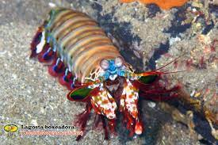
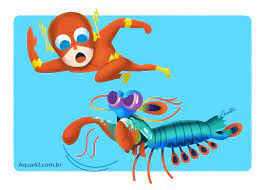

Fatos sobre o Stomatopoda
A sua espécie
O camarão-louva-a-deus-palhaço (Odontodactylus scyllarus), também conhecido como lagosta-boxeadora é uma espécie de tamarutaca nativa do Indo-Pacífico,[1] de Guam até a África Oriental.[2]
Características

São caracterizadas principalmente pela morfologia da segunda pata torácica, que é modificada em apêndice subquelado, lembrando uma pata de louva-a-deus. Apresentam uma grande variação de tamanho, que pode ir de poucos milímetros até aproximadamente 40 cm nas espécies maiores.
Alimentação
São animais exclusivamente carnívoros, alimentando-se de camarões, caranguejos, moluscos, peixes e até mesmo outros da mesma ordem.
Comportamento
Estão entre os crustáceos predadores mais agressivos e de comportamento mais complexo, sendo animais bentônicos crípticos e raramente encontrados, apesar de sua abundância, devido ao hábito escavador.
A lagosta-boxeadora
São capazes de desferir um dos mais rápidos e violentos golpes do reino animal, seu soco fora registrado com uma velocidade de 80 km/h e aceleração similar a uma arma calibre .22. A força do impacto do soco é de 60 kg/cm². Essa força esmagadora é a responsável pelo seu título de "lagosta-boxeadora" e é capaz de facilmente quebrar a carapaça de um caranguejo, as conchas duras e calcificadas de gastrópodes ou até mesmo quebrar o vidro reforçado de um aquário.